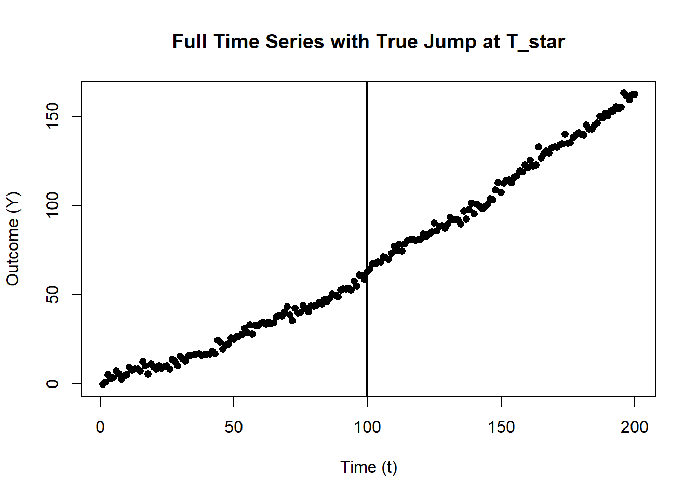
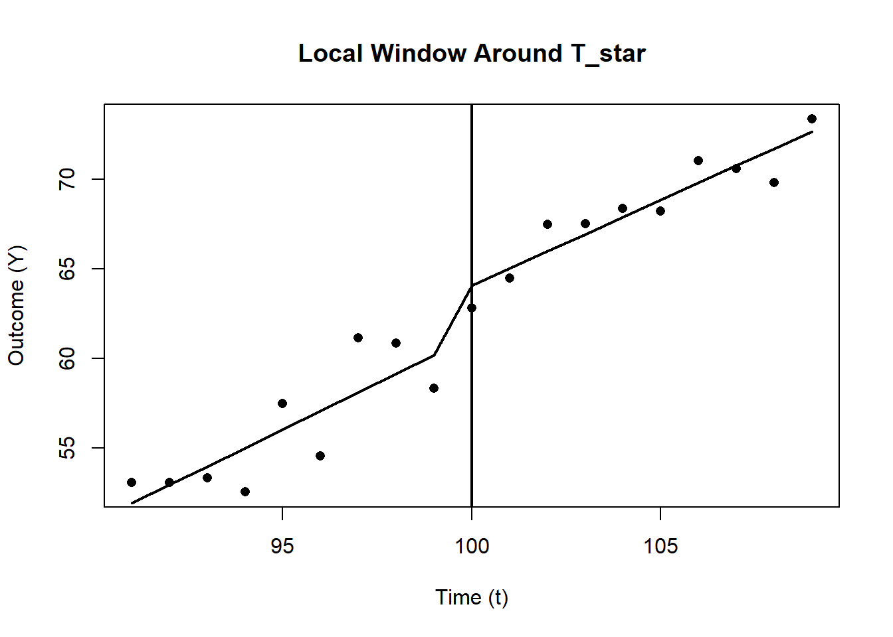

28.1 Regression Discontinuity in Time
Regression Discontinuity in Time is a special case of a Regression Discontinuity design where the “forcing variable” is time itself. At an exact cutoff time \(T^*\), a policy or intervention is implemented. We compare observations just before and just after \(T^*\) to estimate the causal effect.
Key assumptions for RDiT:
- Sharp assignment: The intervention precisely begins at time \(T^*\).
- Local continuity: Units just before and after \(T^*\) are comparable except for treatment status.
- Continuity of Time-Varying Confounders
- The fundamental assumption in RDiT is that unobserved factors affecting the outcome evolve smoothly over time.
- If an unobserved confounder changes discontinuously at the cutoff date, RDiT will attribute the effect to the intervention incorrectly.
- No other confounding interventions that begin exactly at \(T^*\).
- No Manipulation of the Running Variable (Time)
- Unlike standard RD, where subjects may manipulate their assignment variable (e.g., test scores), time cannot be directly manipulated.
- However, strategic anticipation of a policy (e.g., firms adjusting behavior before a tax increase) can create bias.
Using a local polynomial approach near \(T^*\):
\[ Y_t = \alpha_0 + \alpha_1 \bigl(T_t - T^*\bigr) + \tau D_t + \alpha_2 \bigl(T_t - T^*\bigr) D_t + \epsilon_t, \]
for \(|T_t - T^*| < h\), where:
- \(Y_t\) is the outcome at time \(t\).
- \(T_t\) is the time index (running variable).
- \(T^*\) is the cutoff (intervention) time.
- \(D_t = 1\) if \(t \ge T^*\) and 0 otherwise.
- \(h\) is a chosen bandwidth such that only observations close to \(T^*\) are used.
- \(\tau\) represents the treatment effect (the discontinuity at \(T^*\)).
Because RDiT focuses on a local window around \(T^*\), it is best when you expect an immediate jump at the cutoff and when observations near the cutoff are likely to be similar except for the treatment (Table 28.2).
| Criterion | Standard RD | RDiT |
|---|---|---|
| Running Variable | Cross-sectional (e.g., test score) | Time (e.g., policy implementation date) |
| Treatment Assignment | Based on threshold in \(X\) | Based on threshold in \(T^*\) |
| Assumptions | No sorting, smooth potential outcomes | No anticipatory behavior, smooth confounders |
| Key Challenge | Manipulation of \(X\) (sorting) | Serial correlation, anticipation effects |
28.1.1 Estimation and Model Selection
In Regression Discontinuity in Time, model selection is critical to accurately estimate the causal effect at the cutoff \(T^*\). Unlike Interrupted Time Series, which models long-term trends before and after an intervention, RDiT relies on local comparisons around the cutoff. This means that:
- A narrow bandwidth (\(h\)) should be chosen to focus on observations just before and after \(T^*\).
- Polynomial order selection should be guided by the Bayesian Information Criterion to avoid overfitting.
- Higher-order polynomials can introduce spurious curvature, so local linear or quadratic models are preferred.
Because RDiT uses time-series data, it is essential to correct for serial correlation in errors:
- Clustered Standard Errors: Adjusts for within-time correlation, ensuring valid inference.
- Newey-West HAC Standard Errors: Corrects for heteroskedasticity and serial correlation over time.
- If serial dependence exists in \(\epsilon_{it}\) (the error term), there is no straightforward fix (introducing a lagged dependent variable may mis-specify the model).
- If serial dependence exists in \(y_{it}\) (the outcome variable):
- With long windows, identifying the precise treatment effect becomes challenging.
- Including a lagged dependent variable can help, though bias may still arise from time-varying treatment effects or over-fitting.
- Baseline Local Linear Model (Preferred in RDiT)
\[ \begin{aligned}Y_t = \alpha_0 &+ \alpha_1 (T_t - T^*) + \tau D_t \\&+ \alpha_2 (T_t - T^*) D_t + \epsilon_t, \quad \text{for } |T_t - T^*| < h\end{aligned} \]
where:
\(Y_t\) is the outcome of interest at time \(t\).
\(T_t\) is the time forcing variable.
\(T^*\) is the cutoff time when the policy/intervention occurs.
\(D_t\) is the treatment indicator:
\(D_t = 1\) if \(t \geq T^*\) (post-intervention).
\(D_t = 0\) if \(t < T^*\) (pre-intervention).
\(h\) is the bandwidth, restricting analysis to observations close to \(T^*\).
\(\tau\) is the treatment effect, measuring the discontinuity at \(T^*\).
\(\alpha_1 (T_t - T^*)\) allows for a smooth time trend on both sides of the cutoff.
\(\alpha_2 (T_t - T^*) D_t\) captures any differential time trends post-treatment.
This model ensures that the treatment effect is identified from the discontinuity at \(T^*\), rather than long-term trends.
- Quadratic Local Model (Allowing for Nonlinear Trends)
If the outcome variable exhibits curvature over time, a quadratic term can be added:
\[ \begin{aligned}Y_t = \alpha_0 &+ \alpha_1 (T_t - T^*) + \alpha_2 (T_t - T^*)^2 + \tau D_t \\&+ \alpha_3 (T_t - T^*) D_t + \alpha_4 (T_t - T^*)^2 D_t + \epsilon_t, \\&\quad \text{for } |T_t - T^*| < h\end{aligned} \]
- \(\alpha_2 (T_t - T^*)^2\) accounts for nonlinear pre-treatment trends.
- \(\alpha_4 (T_t - T^*)^2 D_t\) allows for nonlinear post-treatment effects.
This model is useful if visual inspection suggests a curved relationship near the cutoff.
- Augmented Local Linear Model (Robust Control for Confounders)
Following C. Hausman and Rapson (2018), an augmented approach helps control for omitted variables:
First-stage regression: Estimate the outcome with all relevant control variables and compute the residuals.
\[ Y_t = \delta_0 + \sum_{j} \delta_j X_{jt} + \nu_t \]
where \(X_{jt}\) are observed covariates that could influence \(Y_t\).
Second-stage RDiT model: Use residuals from the first stage in the standard local linear RDiT model:
\[ \begin{aligned}\hat{\nu}_t = \beta_0 &+ \beta_1 (T_t - T^*) + \tau D_t \\&+ \beta_2 (T_t - T^*) D_t + \epsilon_t, \quad \text{for } |T_t - T^*| < h\end{aligned} \]
- This approach removes variation explained by covariates before estimating the treatment effect.
- Bootstrap methods should be used to correct for first-stage estimation variance.
28.1.2 Strengths of RDiT
One of the key advantages of Regression Discontinuity in Time is its ability to handle cases where standard Difference-in-Differences approaches are infeasible. This typically occurs when treatment implementation lacks cross-sectional variation, meaning that all units receive treatment at the same time, leaving no untreated control group for comparison. In such cases, RDiT provides a viable alternative by exploiting temporal discontinuities in treatment assignment.
Notably, some studies combine both RDiT and DiD to strengthen identification and provide additional insights (Table 28.3). For instance,
Auffhammer and Kellogg (2011) applies these methods to examine how treatment effects vary across individuals and geographic space.
Gallego, Montero, and Salas (2013) contrasts RDiT and DiD estimates when the validity of the control group in DiD is uncertain, helping assess potential biases.
Beyond being an alternative to DiD, RDiT also offers advantages over simpler pre/post comparisons. Unlike naive before-and-after analyses, RDiT can incorporate flexible controls for time trends, reducing the risk of spurious results due to temporal confounders.
Event study methods, particularly modern implementations, have improved significantly, allowing researchers to study treatment effects over long time horizons. However, RDiT still holds certain advantages:
- Longer time horizons: Unlike traditional event studies, RDiT is not restricted to short-term dynamics and can capture effects that unfold gradually over extended periods.
- Higher-order time controls: RDiT allows for more flexible modeling of time trends, including the use of higher-order polynomials, which may provide better approximations of underlying time dynamics.
| Method | Key Feature | Strengths | Weaknesses |
|---|---|---|---|
| Difference-in-Differences | Uses a control group | Accounts for time-invariant confounders | Requires parallel trends assumption |
| Event Studies | Models multiple time periods | Estimates dynamic treatment effects | Requires staggered interventions |
| Pre/Post Comparison | Simple before/after design | No control needed | Cannot separate treatment from time trends |
| Regression Discontinuity in Time | Uses time as the running variable | Flexible polynomial trends | Sensitive to polynomial choice, cannot model time-varying treatment |
28.1.3 Limitations and Challenges of RDiT
Despite its strengths, RDiT comes with several methodological challenges that researchers must carefully address.
28.1.3.1 Selection Bias at the Time Threshold
A major concern in RDiT is bias from selecting observations too close to the threshold. Unlike cross-sectional RD designs, where observations on either side of the cutoff are assumed to be comparable, time-based designs introduce complications:
The data-generating process may exhibit time-dependent structure.
Unobserved shocks occurring near the threshold can confound estimates.
Seasonal or cyclical trends may drive changes at the discontinuity rather than the treatment itself.
28.1.3.2 Inapplicability of the McCrary Test
A key diagnostic tool in standard RD designs is the McCrary test (McCrary 2008), which checks for discontinuities in the density of the running variable to detect manipulation. Unfortunately, this test is not feasible in RDiT because time itself is uniformly distributed. This limitation makes it more challenging to rule out sorting, anticipation, or other forms of manipulation (Section (ref?)(sec-sorting-bunching-and-manipulation)) around the threshold.
28.1.3.3 Potential Discontinuities in Unobservables
Even if the treatment is assigned exogenously at a specific time, time-varying unobserved factors can still introduce discontinuities in the dependent variable. If these unobservable factors coincide with the threshold, they may be mistakenly attributed to the treatment effect, leading to biased conclusions.
28.1.3.4 Challenges in Modeling Time-Varying Treatment Effects
RDiT does not naturally accommodate time-varying treatment effects, which can lead to specification issues. When choosing a time window:
A narrow window improves the local approximation but may reduce statistical power.
A broader window provides more data but increases the risk of bias from additional confounders.
To address these concerns, researchers must assume:
- The model is correctly specified, meaning it includes all relevant confounders or that the polynomial approximation accurately captures time trends.
- The treatment effect is correctly specified, whether assumed to be smooth, constant, or varying over time.
Additionally, these two assumptions must not interact. In other words, the polynomial control should not be correlated with unobserved variation in the treatment effect. If this condition fails, bias from misspecification and treatment heterogeneity can compound (C. Hausman and Rapson 2018, 544).
28.1.3.5 Sorting and Anticipation Effects
Unlike traditional RD designs, where individuals cannot manipulate their assignment to treatment, time-based cutoffs introduce potential sorting, anticipation, or avoidance behaviors.
While the McCrary test cannot be applied to detect manipulation, researchers can perform robustness checks:
Check for discontinuities in other covariates: Ideally, covariates should be smooth around the threshold.
Test for placebo discontinuities: If significant jumps appear at other, randomly chosen thresholds, this raises concerns about the validity of the estimated treatment effect.
The difficulty in RDiT is that even when a treatment effect is detected, it may reflect more than just the causal effect of the intervention. Anticipatory behavior, adaptation, and strategic avoidance may all contribute to observed discontinuities, making it harder to isolate the true causal effect.
Thus, researchers relying on RDiT must make a strong case that such behaviors do not drive their results. This often requires additional robustness tests, alternative specifications, or comparisons with other methods to rule out alternative explanations.
28.1.4 Recommendations for Robustness Checks
To ensure the validity of RDiT estimates, researchers should conduct a series of robustness checks to detect potential biases from overfitting, time-varying treatment effects, and model misspecification. The following strategies, based on (C. Hausman and Rapson 2018, 549), provide a comprehensive framework for assessing the reliability of results.
- Visual Inspection: Raw Data and Residuals
Before applying any complex statistical adjustments, start with a simple visualization of the raw data and residuals (after removing confounders and time trends). If results are sensitive to the choice of polynomial order or local linear controls, it could signal time-varying treatment effects.
A well-behaved RDiT should exhibit a clear and consistent discontinuity at the threshold, regardless of the specification used. If the discontinuity shifts or fades under different model choices, this suggests sensitivity to the polynomial approximation, potentially indicating bias.
- Sensitivity to Polynomial Order and Bandwidth Choice
A common concern in RDiT is overfitting due to high-order global polynomials. To diagnose this issue:
Estimate the model with different polynomial orders and check whether results remain consistent.
Compare global polynomial estimates with local linear specifications using different bandwidths.
If findings remain stable across specifications, the estimates are likely robust. However, if results fluctuate significantly, this suggests potential overfitting or sensitivity to bandwidth choice.
- Placebo Tests
To strengthen causal claims, conduct placebo tests by estimating the RDiT model under conditions where no treatment effect should exist. There are two primary approaches:
- Estimate the RD on a different location or population that did not receive the treatment. If a discontinuity is detected, it suggests that the estimated effect may be driven by factors other than the intervention.
- Use an alternative time threshold where no intervention took place. If the model still detects a significant effect, this implies that the discontinuity may be an artifact of the method rather than the treatment.
If placebo tests reveal no significant discontinuities, this reinforces the credibility of the primary RDiT estimate.
- Discontinuity in Continuous Controls
Another useful diagnostic is to plot the RD discontinuity on continuous control variables that should not be affected by the treatment.
If these covariates exhibit a significant jump at the threshold, it raises concerns that other time-varying confounders may be driving the observed effect.
Ideally, covariates should remain smooth across the threshold, confirming that the discontinuity in the outcome is not due to unobserved factors.
- Donut RD: Excluding Observations Near the Cutoff
To assess whether strategic behavior or anticipation effects are influencing the estimates, researchers can use a donut RD approach (Barreca et al. 2011).
This involves removing observations immediately around the threshold to check whether results remain consistent.
If avoiding selection close to the cutoff significantly alters the findings, this suggests that sorting, anticipation, or measurement error may be affecting the estimates.
If results are stable even after excluding these observations, it strengthens confidence in the identification strategy.
- Testing for Autoregression
Because RDiT operates in a time-series framework, serial dependence in the residuals can distort standard errors and bias inference. To diagnose this:
Use pre-treatment data to test for autoregression in the dependent variable.
If autoregression is detected, consider including a lagged dependent variable to account for serial correlation.
However, be cautious because introducing a lagged outcome may create dynamic bias if the treatment effect itself influences the lag.
- Augmented Local Linear Approach
Instead of relying on global polynomials, which risk overfitting, a more reliable alternative is an augmented local linear approach, which avoids excessive reliance on high-order time polynomials. The procedure involves two key steps:
- Use the full sample to control for key predictors, ensuring that the model accounts for important covariates that may confound the treatment effect.
- Estimate the conditioned second-stage model on a narrower bandwidth to refine the local approximation while maintaining robustness to overfitting.
28.1.5 Applications of RDiT
Regression Discontinuity in Time has been widely applied across various disciplines, particularly in economics and marketing, where policy changes, regulations, and market shifts often provide natural time-based discontinuities. Below, we summarize key studies that have employed RDiT to estimate causal effects.
28.1.5.1 Applications in Economics
RDiT has been used extensively in environmental economics, transportation policy, and public health, where regulations or interventions are introduced at well-defined points in time. Some notable studies include:
- Environmental Regulations and Air Quality
Several studies exploit sudden policy changes or emission regulations to estimate their impact on air pollution:
Davis (2008), Auffhammer and Kellogg (2011), and H. Chen et al. (2018) all examine the impact of environmental regulations on air quality.
Gallego, Montero, and Salas (2013) compares RDiT and DID estimates to assess the reliability of control groups in air pollution studies.
By leveraging RDiT, these studies isolate immediate changes in pollution levels at policy thresholds while controlling for underlying trends.
- Traffic and Transportation Policies
RDiT has been used to assess the impact of transportation policies on congestion, accidents, and public transit usage:
Bento et al. (2014) and M. L. Anderson (2014) investigate how new subway openings and transportation policies affect traffic congestion.
De Paola, Scoppa, and Falcone (2013) and Burger, Kaffine, and Yu (2014) analyze the deterrent effects of traffic safety regulations on car accidents, using policy enactment dates as a discontinuity.
These studies demonstrate how RDiT can effectively measure behavioral responses to transportation interventions, isolating immediate impacts from broader secular trends.
- COVID-19 Lockdowns and Well-being
- Brodeur et al. (2021) employs RDiT to assess the impact of COVID-19 lockdowns on psychological well-being, economic activity, and public health outcomes.
The sudden implementation of lockdown policies provides a sharp time-based discontinuity, making RDiT a natural method to evaluate their effects.
28.1.5.2 Applications in Marketing
In marketing, RDiT has been applied to analyze consumer behavior, pricing strategies, and promotional effectiveness in response to abrupt policy or market changes.
- Vehicle Pricing and Demand Shocks
Several studies leverage RDiT to study how consumers and firms respond to price changes in the automotive market:
M. Busse, Silva-Risso, and Zettelmeyer (2006), M. R. Busse, Simester, and Zettelmeyer (2010), and M. R. Busse et al. (2013) explore the impact of promotional campaigns and policy changes on vehicle prices.
Davis and Kahn (2010) investigates how changes in international trade policies influence vehicle pricing.
By identifying sharp price discontinuities at the time of policy changes, these studies provide causal insights into price elasticity and consumer demand.
- Customer Satisfaction and Learning Effects
- X. Chen et al. (2009) applies RDiT to measure how customer satisfaction evolves after firms make abrupt service changes.
This study demonstrates how RDiT can capture immediate consumer reactions, distinguishing between short-term dissatisfaction and long-term adaptation.
28.1.6 Empirical Example
- Generating synthetic time-series data with a known cutoff T_star
- Visualizing the entire dataset, including the jump at T_star
- Fitting a local linear RDiT model (baseline)
- Adding a local polynomial (quadratic) to allow nonlinear trends
- Demonstrating robust (sandwich) standard errors to account for serial correlation
- Performing a “donut” RDiT by excluding observations near T_star
- Conducting a placebo test at a fake cutoff
- Demonstrating an augmented approach with a confounder
- Plotting the local data and fitted RDiT regression lines
# -------------------------------------------------------------------
# 0. Libraries
# -------------------------------------------------------------------
if(!require("sandwich")) install.packages("sandwich", quiet=TRUE)
if(!require("lmtest")) install.packages("lmtest", quiet=TRUE)
library(sandwich)
library(lmtest)
# -------------------------------------------------------------------
# 1. Generate Synthetic Data
# -------------------------------------------------------------------
set.seed(123)
n <- 200 # total number of time points
T_star <- 100 # cutoff (policy/intervention) time
t_vals <- seq_len(n) # time index: 1, 2, ..., n
# Outcome Y has a linear pre-trend, a mild quadratic component,
# and a jump of +5 at T_star
# plus a small sinusoidal seasonality and random noise.
Y <- 0.4 * t_vals + # baseline slope
0.002 * (t_vals^2) + # mild curvature
ifelse(t_vals >= T_star, 5, 0) + # jump at T_star
2*sin(t_vals / 8) + # mild seasonal pattern
rnorm(n, sd = 2) # random noise
# Optional confounder X that also increases with time
X <- 1.5 * t_vals + rnorm(n, sd=5)
# Store everything in a single data frame
df_full <- data.frame(t = t_vals, Y = Y, X = X)Figure 28.1 shows the full time series with structural break at \(T^*\).
# -------------------------------------------------------------------
# 2. Plot the Entire Dataset & Highlight the Cutoff
# -------------------------------------------------------------------
# par(mfrow=c(1,2)) # We'll produce two plots side by side
# Plot 1: Full data
plot(df_full$t, df_full$Y, pch=16,
xlab="Time (t)", ylab="Outcome (Y)",
main="Full Time Series with True Jump at T_star")
abline(v=T_star, lwd=2) # vertical line at the cutoff
Figure 28.1: Full Time Series with Structural Break at T*
# -------------------------------------------------------------------
# 3. Restrict to a Local Bandwidth (h) Around T_star
# -------------------------------------------------------------------
h <- 10
df_local <- subset(df_full, abs(t - T_star) < h)
# Create variables for local regression
df_local$D <- ifelse(df_local$t >= T_star, 1, 0)
df_local$t_centered <- df_local$t - T_star
# -------------------------------------------------------------------
# 4. Baseline Local Linear RDiT Model
# -------------------------------------------------------------------
# Model:
# Y = alpha_0 + alpha_1*(t - T_star) + tau*D + alpha_2*(t - T_star)*D + error
mod_rdit_linear <- lm(Y ~ t_centered + D + t_centered:D, data = df_local)
# Robust (HC) standard errors for potential serial correlation
res_rdit_linear <- coeftest(mod_rdit_linear, vcov = vcovHC(mod_rdit_linear, type="HC1"))
# -------------------------------------------------------------------
# 5. Local Polynomial (Quadratic) RDiT Model
# -------------------------------------------------------------------
df_local$t_centered2 <- df_local$t_centered^2
mod_rdit_quad <- lm(Y ~ t_centered + t_centered2 + D + t_centered:D + t_centered2:D,
data = df_local)
res_rdit_quad <- coeftest(mod_rdit_quad, vcov = vcovHC(mod_rdit_quad, type="HC1"))
# -------------------------------------------------------------------
# 6. Donut Approach: Excluding Observations Near the Cutoff
# -------------------------------------------------------------------
df_donut <- subset(df_local, abs(t - T_star) > 1) # remove t_star +/- 1 unit
mod_rdit_donut <- lm(Y ~ t_centered + D + t_centered:D, data = df_donut)
res_rdit_donut <- coeftest(mod_rdit_donut, vcov = vcovHC(mod_rdit_donut, type="HC1"))
# -------------------------------------------------------------------
# 7. Placebo Test: Fake Cutoff
# -------------------------------------------------------------------
T_fake <- 120
df_placebo <- subset(df_full, abs(t - T_fake) < h)
df_placebo$D_placebo <-
ifelse(df_placebo$t >= T_fake, 1, 0)
df_placebo$t_centered_placebo <- df_placebo$t - T_fake
mod_rdit_placebo <-
lm(Y ~ t_centered_placebo + D_placebo + t_centered_placebo:D_placebo,
data = df_placebo)
res_rdit_placebo <-
coeftest(mod_rdit_placebo, vcov = vcovHC(mod_rdit_placebo, type = "HC1"))
# -------------------------------------------------------------------
# 8. Augmented RDiT Model (Controlling for X)
# -------------------------------------------------------------------
mod_rdit_aug <- lm(Y ~ X + t_centered + D + t_centered:D, data = df_local)
res_rdit_aug <- coeftest(mod_rdit_aug, vcov = vcovHC(mod_rdit_aug, type="HC1"))Figure 28.2 shows the local data and fitted RDiT line.
# -------------------------------------------------------------------
# 9. Plot the Local Data and Fitted RDiT Lines
# -------------------------------------------------------------------
plot(
df_local$t,
df_local$Y,
pch = 16,
xlab = "Time (t)",
ylab = "Outcome (Y)",
main = "Local Window Around T_star"
)
# Sort data by centered time for a smooth line
df_local_sorted <- df_local[order(df_local$t_centered),]
pred_linear <- predict(mod_rdit_linear, newdata = df_local_sorted)
lines(df_local_sorted$t, pred_linear, lwd = 2)
# Add a vertical line at T_star for reference
abline(v=T_star, lwd=2)
Figure 28.2: Local Linear Regression Around the Cutoff T*
# -------------------------------------------------------------------
# Print Summaries & Brief Interpretation
# -------------------------------------------------------------------
cat(" Local Linear RDiT (Baseline):\n")
#> Local Linear RDiT (Baseline):
print(res_rdit_linear)
#>
#> t test of coefficients:
#>
#> Estimate Std. Error t value Pr(>|t|)
#> (Intercept) 61.213434 1.625008 37.6696 2.853e-16 ***
#> t_centered 1.032094 0.231380 4.4606 0.0004579 ***
#> D 2.853971 1.772639 1.6100 0.1282338
#> t_centered:D -0.076391 0.271405 -0.2815 0.7821991
#> ---
#> Signif. codes: 0 '***' 0.001 '**' 0.01 '*' 0.05 '.' 0.1 ' ' 1
cat("\n Local Quadratic RDiT:\n")
#>
#> Local Quadratic RDiT:
print(res_rdit_quad)
#>
#> t test of coefficients:
#>
#> Estimate Std. Error t value Pr(>|t|)
#> (Intercept) 61.827393 3.038967 20.3449 3.061e-11 ***
#> t_centered 1.366981 1.342431 1.0183 0.3271
#> t_centered2 0.033489 0.124970 0.2680 0.7929
#> D 1.577410 3.103945 0.5082 0.6198
#> t_centered:D 0.085673 1.397606 0.0613 0.9521
#> t_centered2:D -0.088706 0.134490 -0.6596 0.5210
#> ---
#> Signif. codes: 0 '***' 0.001 '**' 0.01 '*' 0.05 '.' 0.1 ' ' 1
cat("\n Donut RDiT (Excluding Observations Near T_star):\n")
#>
#> Donut RDiT (Excluding Observations Near T_star):
print(res_rdit_donut)
#>
#> t test of coefficients:
#>
#> Estimate Std. Error t value Pr(>|t|)
#> (Intercept) 62.52140 1.87095 33.4169 3.273e-13 ***
#> t_centered 1.22829 0.27153 4.5235 0.0006975 ***
#> D 2.97980 2.01021 1.4823 0.1640306
#> t_centered:D -0.49288 0.32020 -1.5393 0.1496810
#> ---
#> Signif. codes: 0 '***' 0.001 '**' 0.01 '*' 0.05 '.' 0.1 ' ' 1
cat("\n Placebo Test (Fake Cutoff at T_fake=120):\n")
#>
#> Placebo Test (Fake Cutoff at T_fake=120):
print(res_rdit_placebo)
#>
#> t test of coefficients:
#>
#> Estimate Std. Error t value Pr(>|t|)
#> (Intercept) 82.658533 0.868852 95.1354 < 2.2e-16 ***
#> t_centered_placebo 0.768238 0.185830 4.1341 0.0008831 ***
#> D_placebo -0.377333 1.188411 -0.3175 0.7552328
#> t_centered_placebo:D_placebo -0.013586 0.245019 -0.0555 0.9565112
#> ---
#> Signif. codes: 0 '***' 0.001 '**' 0.01 '*' 0.05 '.' 0.1 ' ' 1
cat("\n Augmented RDiT (Controlling for X):\n")
#>
#> Augmented RDiT (Controlling for X):
print(res_rdit_aug)
#>
#> t test of coefficients:
#>
#> Estimate Std. Error t value Pr(>|t|)
#> (Intercept) 50.960390 13.226193 3.8530 0.001757 **
#> X 0.068836 0.087887 0.7832 0.446540
#> t_centered 0.984583 0.249801 3.9415 0.001476 **
#> D 2.922905 1.935753 1.5100 0.153291
#> t_centered:D -0.141496 0.318509 -0.4442 0.663655
#> ---
#> Signif. codes: 0 '***' 0.001 '**' 0.01 '*' 0.05 '.' 0.1 ' ' 1- ‘D’ is the local jump at T_star (i.e., the treatment effect, tau).
- ‘t_centered:D’ indicates how the slope differs post-cutoff.
- In the placebo test, D_placebo should ideally be insignificant.
- In the donut model, large differences from the baseline may suggest local anomalies or anticipation near T_star.
- In the augmented model, controlling for \(X\) can change tau if \(X\) was correlated with both \(Y\) and time.